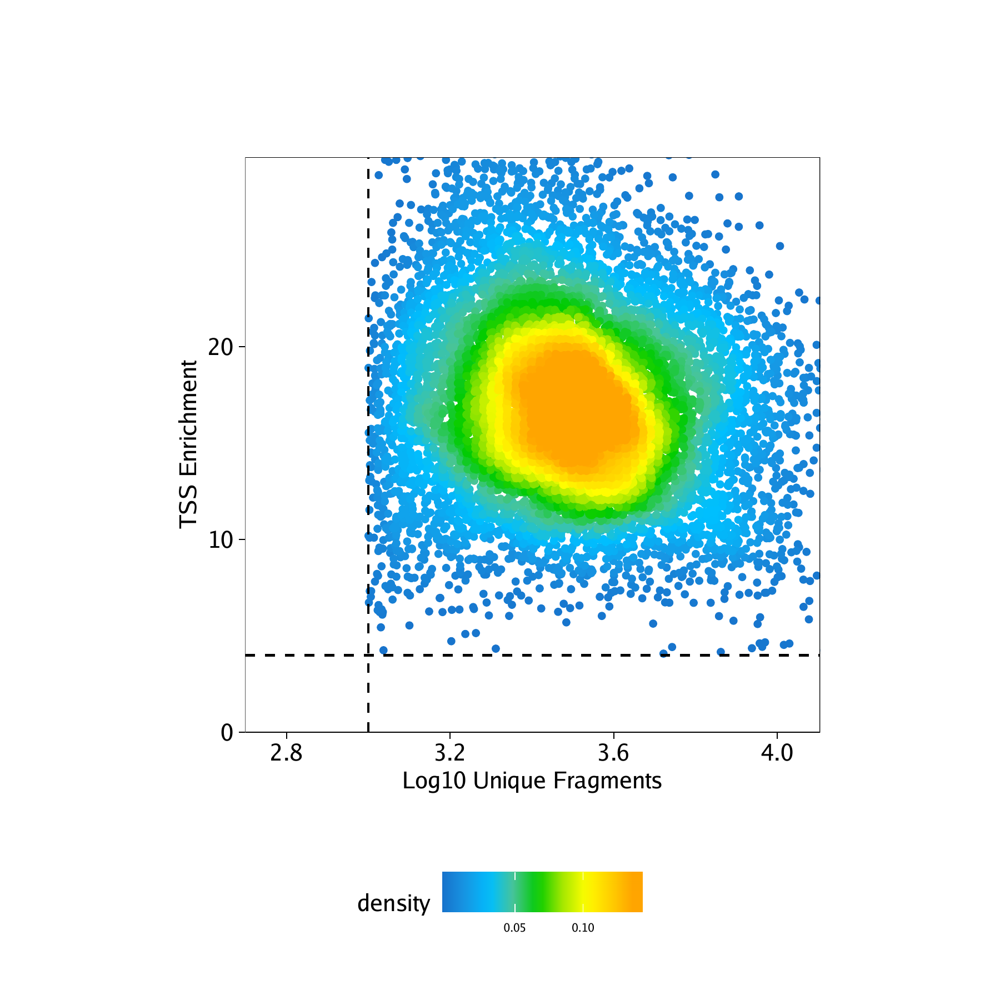

3.2 Manipulating An ArchRProject
Now that we have created an ArchRProject, there are many things that we can do to easily access or manipulate the associated data.
Example 1. The $ accessor allows direct access to cellColData
We can access the cell names associated with each cell:
## [1] “scATAC_BMMC_R1#TTATGTCAGTGATTAG-1” “scATAC_BMMC_R1#AAGATAGTCACCGCGA-1”
## [3] “scATAC_BMMC_R1#GCATTGAAGATTCCGT-1” “scATAC_BMMC_R1#TATGTTCAGGGTTCCC-1”
## [5] “scATAC_BMMC_R1#TCCATCGGTCCCGTGA-1” “scATAC_BMMC_R1#AGTTACGAGAACGTCG-1”
We can access the sample names associated with each cell:
## [1] “scATAC_BMMC_R1” “scATAC_BMMC_R1” “scATAC_BMMC_R1” “scATAC_BMMC_R1”
## [5] “scATAC_BMMC_R1” “scATAC_BMMC_R1”
We can access the TSS Enrichment Scores for each cell:
## 0% 25% 50% 75% 100%
## 4.027 13.922 16.832 19.937 41.782
Example 2. Subsetting an ArchRProject by cells
There are many ways that we can subset an ArchRProject to obtain only a select set of cells.
We can subset the project numerically, for example taking the first 100 cells in the project:
## class: ArchRProject
## outputDirectory: /oak/stanford/groups/howchang/users/jgranja/ArchRTutorial/ArchRBook/BookOutput4/HemeTutorial
## samples(3): scATAC_BMMC_R1 scATAC_CD34_BMMC_R1 scATAC_PBMC_R1
## sampleColData names(1): ArrowFiles
## cellColData names(11): Sample TSSEnrichment … DoubletScore
## DoubletEnrichment
## numberOfCells(1): 100
## medianTSS(1): 10.7725
## medianFrags(1): 10200.5
We can subset the project based on certain cell names:
## class: ArchRProject
## outputDirectory: /oak/stanford/groups/howchang/users/jgranja/ArchRTutorial/ArchRBook/BookOutput4/HemeTutorial
## samples(3): scATAC_BMMC_R1 scATAC_CD34_BMMC_R1 scATAC_PBMC_R1
## sampleColData names(1): ArrowFiles
## cellColData names(11): Sample TSSEnrichment … DoubletScore
## DoubletEnrichment
## numberOfCells(1): 100
## medianTSS(1): 10.7725
## medianFrags(1): 10200.5
We can subset the project to keep all cells corresponding to a specific sample:
idxSample <- BiocGenerics::which(projHeme1$Sample %in% "scATAC_BMMC_R1")
cellsSample <- projHeme1$cellNames[idxSample]
projHeme1[cellsSample, ]## class: ArchRProject
## outputDirectory: /oak/stanford/groups/howchang/users/jgranja/ArchRTutorial/ArchRBook/BookOutput4/HemeTutorial
## samples(3): scATAC_BMMC_R1 scATAC_CD34_BMMC_R1 scATAC_PBMC_R1
## sampleColData names(1): ArrowFiles
## cellColData names(11): Sample TSSEnrichment … DoubletScore
## DoubletEnrichment
## numberOfCells(1): 4932
## medianTSS(1): 15.254
## medianFrags(1): 2771
We can subset the project to only keep cells that meet a specific cutoff for the TSS enrichment score:
idxPass <- which(projHeme1$TSSEnrichment >= 8)
cellsPass <- projHeme1$cellNames[idxPass]
projHeme1[cellsPass, ]## class: ArchRProject ## outputDirectory: /oak/stanford/groups/howchang/users/jgranja/ArchRTutorial/ArchRBook/BookOutput4/HemeTutorial
## samples(3): scATAC_BMMC_R1 scATAC_CD34_BMMC_R1 scATAC_PBMC_R1
## sampleColData names(1): ArrowFiles
## cellColData names(11): Sample TSSEnrichment … DoubletScore
## DoubletEnrichment
## numberOfCells(1): 10500
## medianTSS(1): 16.9275
## medianFrags(1): 3042
Example 3. Adding data to an ArchRProject
We can add columns to cellColData to store any type of cell-specific metadata relevant to our project.
For example, we can add a column to cellColData that contains more legible sample names by removing excess info from the original sample names:
## [1] “BMMC” “BMMC” “BMMC” “BMMC” “BMMC” “BMMC”
## [7] “BMMC” “BMMC” “BMMC” “BMMC” “BMMC” “BMMC”
One way to add a column called to cellColData is by directly using the $ accessor.
Alternatively, we can add a column to cellColData using the addCellColData() function. ArchR allows for the addition of columns that only contain information for a subset of cells.
bioNames <- bioNames[1:10]
cellNames <- projHeme1$cellNames[1:10]
projHeme1 <- addCellColData(ArchRProj = projHeme1, data = paste0(bioNames),
cells = cellNames, name = "bioNames2")By default, ArchR will fill in missing entries with NA. Because of this, when we can compare these two columns, we see NA filled in where data wasnt available for bioNames2:
## DataFrame with 10661 rows and 2 columns
## bioNames bioNames2
##
## scATAC_BMMC_R1#TTATGTCAGTGATTAG-1 BMMC BMMC
## scATAC_BMMC_R1#AAGATAGTCACCGCGA-1 BMMC BMMC
## scATAC_BMMC_R1#GCATTGAAGATTCCGT-1 BMMC BMMC
## scATAC_BMMC_R1#TATGTTCAGGGTTCCC-1 BMMC BMMC
## scATAC_BMMC_R1#TCCATCGGTCCCGTGA-1 BMMC BMMC
## … … …
## scATAC_PBMC_R1#GCTGCGAAGATCCGAG-1 PBMC NA
## scATAC_PBMC_R1#GCAGCTGGTGGCCTTG-1 PBMC NA
## scATAC_PBMC_R1#GCAGATTGTACGCAAG-1 PBMC NA
## scATAC_PBMC_R1#TTCGTTACATTGAACC-1 PBMC NA
## scATAC_PBMC_R1#CGCTATCGTGAGGTCA-1 PBMC NA
Example 4. Obtaining columns from cellColData
ArchR provides the getCellColData() function to enable easy retreival of metadata columns from an ArchRProject.
For example, we can retrieve a column by name, such as the number of unique nuclear (i.e. non-mitochondrial) fragments per cell:
## DataFrame with 10661 rows and 1 column
## nFrags
##
## scATAC_BMMC_R1#TTATGTCAGTGATTAG-1 26189
## scATAC_BMMC_R1#AAGATAGTCACCGCGA-1 20648
## scATAC_BMMC_R1#GCATTGAAGATTCCGT-1 18991
## scATAC_BMMC_R1#TATGTTCAGGGTTCCC-1 18296
## scATAC_BMMC_R1#TCCATCGGTCCCGTGA-1 17458
## … …
## scATAC_PBMC_R1#GCTGCGAAGATCCGAG-1 1038
## scATAC_PBMC_R1#GCAGCTGGTGGCCTTG-1 1037
## scATAC_PBMC_R1#GCAGATTGTACGCAAG-1 1033
## scATAC_PBMC_R1#TTCGTTACATTGAACC-1 1033
## scATAC_PBMC_R1#CGCTATCGTGAGGTCA-1 1002
Instead of selecting a column by name, we can actually perform operations on a given column using its column name:
## DataFrame with 10661 rows and 2 columns
## log10(nFrags) nFrags - 1
##
## scATAC_BMMC_R1#TTATGTCAGTGATTAG-1 4.4181189156542 26188
## scATAC_BMMC_R1#AAGATAGTCACCGCGA-1 4.31487799153581 20647
## scATAC_BMMC_R1#GCATTGAAGATTCCGT-1 4.27854783377585 18990
## scATAC_BMMC_R1#TATGTTCAGGGTTCCC-1 4.26235615159869 18295
## scATAC_BMMC_R1#TCCATCGGTCCCGTGA-1 4.24199448915678 17457
## … … …
## scATAC_PBMC_R1#GCTGCGAAGATCCGAG-1 3.01619735351244 1037
## scATAC_PBMC_R1#GCAGCTGGTGGCCTTG-1 3.01577875638904 1036
## scATAC_PBMC_R1#GCAGATTGTACGCAAG-1 3.01410032151962 1032
## scATAC_PBMC_R1#TTCGTTACATTGAACC-1 3.01410032151962 1032
## scATAC_PBMC_R1#CGCTATCGTGAGGTCA-1 3.00086772153123 1001
Example 5. Plotting QC metrics - log10(Unique Fragments) vs TSS enrichment score
Repeating the example shown above, we can easily obtain standard scATAC-seq metrics for quality control of individual cells. We have found that the most robust metrics for quality control are the TSS enrichment score (a measure of signal-to-background in ATAC-seq data) and the number of unique nuclear fragments (because cells with very few fragments do not have enough data to confidently analyze).
## DataFrame with 10661 rows and 2 columns
## log10(nFrags) TSSEnrichment
##
## scATAC_BMMC_R1#TTATGTCAGTGATTAG-1 4.4181189156542 7.149
## scATAC_BMMC_R1#AAGATAGTCACCGCGA-1 4.31487799153581 7.911
## scATAC_BMMC_R1#GCATTGAAGATTCCGT-1 4.27854783377585 4.505
## scATAC_BMMC_R1#TATGTTCAGGGTTCCC-1 4.26235615159869 6.946
## scATAC_BMMC_R1#TCCATCGGTCCCGTGA-1 4.24199448915678 4.799
## … … …
## scATAC_PBMC_R1#GCTGCGAAGATCCGAG-1 3.01619735351244 24.356
## scATAC_PBMC_R1#GCAGCTGGTGGCCTTG-1 3.01577875638904 22.537
## scATAC_PBMC_R1#GCAGATTGTACGCAAG-1 3.01410032151962 20.146
## scATAC_PBMC_R1#TTCGTTACATTGAACC-1 3.01410032151962 30.198
## scATAC_PBMC_R1#CGCTATCGTGAGGTCA-1 3.00086772153123 21.485
Now lets plot the number of unique nuclear fragments (log10) by the TSS enrichment score. This type of plot is
key for identifying high quality cells. You’ll notice that the cutoffs that we previously specified when creating the Arrow files (via filterTSS and filterFrags) have already removed low quality cells. However, if we noticed that the previously applied QC filters were not adequate for this sample, we could further adjust our cutoffs based on this plot or re-generate the Arrow files if needed.
p <- ggPoint(
x = df[,1],
y = df[,2],
colorDensity = TRUE,
continuousSet = "sambaNight",
xlabel = "Log10 Unique Fragments",
ylabel = "TSS Enrichment",
xlim = c(log10(500), quantile(df[,1], probs = 0.99)),
ylim = c(0, quantile(df[,2], probs = 0.99))
) + geom_hline(yintercept = 4, lty = "dashed") + geom_vline(xintercept = 3, lty = "dashed")
p
To save an editable vectorized version of this plot, we use plotPDF().
## [1] “plotting ggplot!”
## [1] 0